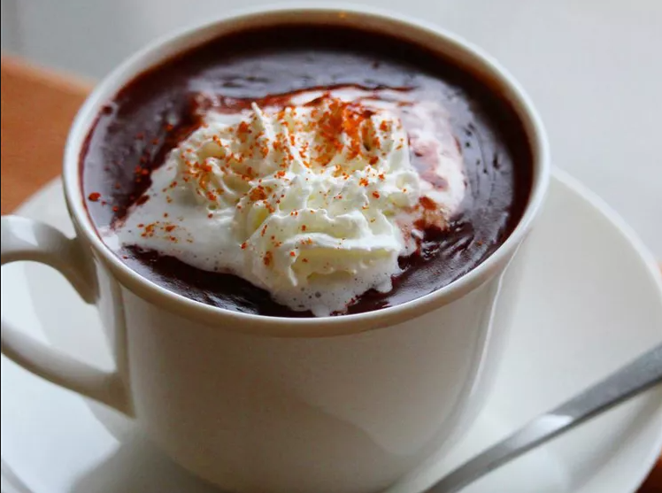

Cioccolata Calda (Hot Chocolate Italian-Style)

Description
Hot chocolate Italian-style is one of the most amazing treats in the world! You have to try this pudding-like chocolate decadence!
Ingredients
- 3 tablespoons cocoa powder
- 1 ½ tablespoons white sugar
- 1 ½ cups milk
- 2 tablespoons milk
- 1 tablespoon cornstarch
Steps
- Mix the cocoa powder and sugar together in a small saucepan. Stir the 1 1/2 cups milk into the saucepan until the sugar has dissolved. Place over low heat; slowly bring the mixture to a low simmer.
- Whisk 2 tablespoons of milk together with the cornstarch in a small cup; slowly whisk the cornstarch slurry into the cocoa mixture. Continue cooking, whisking continually, until the hot chocolate reaches a pudding-like thickness, 2 to 3 minutes.
Back to Homepage